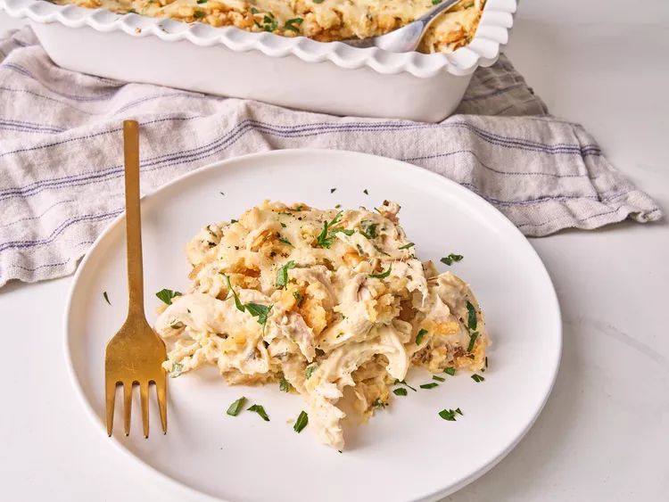

Chicken Casserole

This million dollar chicken casserole is rich, creamy, and incredibly savory. It's so good, it's hard to stop eating! The cottage cheese is the trick to getting such a creamy texture and using rotisserie chicken keeps this recipe quick. Feel free to add peas or steamed broccoli. Serve with a simple salad or noodles.
Ingredients
- 1 (10.5 ounce) can cream of chicken soup
- ½ cup cottage cheese
- ½ cup sour cream
- 4 ounces cream cheese, at room temperature
- 1 ½ teaspoons Creole seasoning
- ½ teaspoon onion powder
- 1 teaspoon garlic powder, divided
- 5 cups shredded rotisserie chicken
- 1 tablespoon chopped fresh parsley
- 30 buttery round crackers (such as Ritz), crushed
- 4 tablespoons unsalted butter, melted
- 1 cup shredded mozzarella cheese
- 1 teaspoon sliced scallions, or to taste
Home